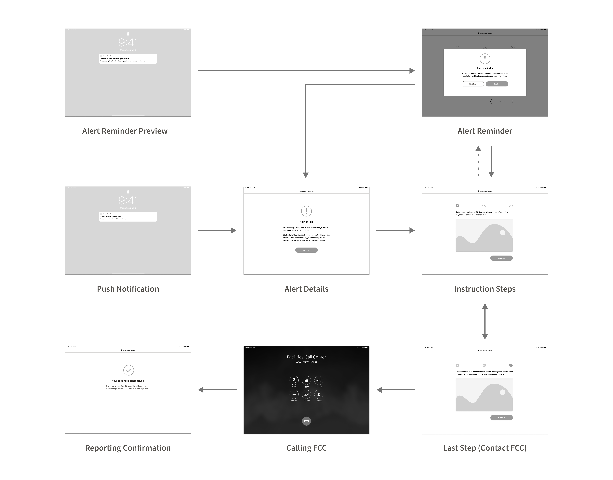

Enabling Preventive Maintenance through IoT Intelligence
User-Centered Design Process · Proof-of-Concept · Web Application
My Role
- Led user-centered design process
- Collaborated with Starbucks Corporate Facilities, R&D, Tryer Center Innovation Lab, and IUPUI co-op team
Overview
Starbucks is shifting into a preventive maintenance approach by implementing an inter-connected water filtration system. Leveraging IoT analytics, the overarching goal is to predict component failures and achieve “fix-before-fail” to optimize equipment uptime and reduce operating expenses.
Challenge
The company foresaw IoT bringing positive impacts on key stakeholders’ responsibilities at the core of tackling equipment maintenance.
I led design for Store Operation in collaboration with a cross-functional team.
Solution
Adopted a user-centered design approach, I delivered a digital solution that reduces store partners’ mindshare and opportunity costs during the maintenance requesting process.
View Design in Action
Identify Experience Frictions
The whole process started with putting myself into store partners’ shoes. I conducted interviews with 4 partners, who worked at stores with IoT equipment already running for pilot testing, to understand the existing reactive maintenance procedure, their engagement and experience.
High Mindshare & Opportunity Costs
In the existing process, store partners are the personnel who’s responsible for initiating maintenance request on equipment failures. By mapping out their journey, I understood the maintenance requesting process required store partners to manually identify failures and request troubleshooting through a service call, in which high mindshare was demanded with increased opportunity costs for customers service and engagement.
Define Design Scope
We worked closely with Equipment R&D and Tryer Center Innovation teams to understand IoT capabilities for defining a feasible project scope.

A Sneak Peek into our "War Room"
Experience enabled by IoT Capabilities
With a deep dive into telemetry streamed from an array of flow, pressure, and conductivity sensors possessed across the configuration, we comprehended that IoT analytics offered the technical feasibility of predicting equipment failures, sending realtime alerts to guide store partners through maintenance requesting.
For example in the case when incoming water pressure gets low in store, IoT will send realtime alert and tailored instructions to help the store partner turn on bypass valve to avoid water starvation, along with a reminder to contact Facilities Call Center for further investigation on the perceived issue.
Ideation

Refined Workflow
Use Cases
As aligned flow with the team, I conducted a holistic audit on common issues that store partners frequently encounter on water filtration system, and compiled a list of maintenance use cases with my team.

Early Sketches

Wireframing

Final Flow